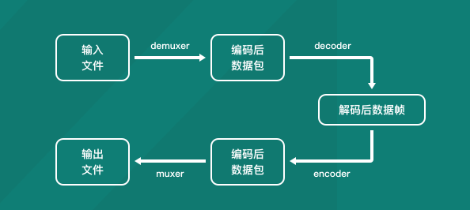

FFmpeg-公司技术分享
什么是FFmpeg
github地址：https://github.com/FFmpeg/FFmpeg
FFmpeg官网：https://ffmpeg.org/
FFmpeg是一套可以用来做音视频采集，裁剪,转换，推流等操作的开源计算机程序。采用LGPL或GPL许可证，它提供了录制、转换以及流化音视频的完整解决方案。
国内耳熟能详的暴风影音、QQ影音，以及国外著名的KMPlayer、PotPlayer，都采用了FFmpeg的代码但却不按规矩开源，被放入了FFmpeg的耻辱名单当中。
FFmpeg主要组成组件
ffmpeg：一个命令行工具，用来对视频，音频文件执行剪辑，转换格式，旋转，添加滤镜等操作的指令集ffserver：一个HTTP多媒体即时广播流服务器，支持回溯ffplay：一个简单的播放器，基于SDL与FFmpeg库libavcodec：包含全部FFmpeg音频/视频编解码库libavformat：包含demuxers和muxer封装格式库libavutil：ffmpeg一个工具库libavfilter：加filter的库(这里翻译成滤镜不太严谨)libswscale：对图像做转换比例(缩放)的库libavresample：做重采样的库libavdevice：使用这个库可以读取电脑（或者其他设备上）的多媒体设备的数据，或者输出数据到指定的多媒体设备上
FFmpeg命令集的常用参数
FFmpeg可使用众多参数，参数内容会根据ffmpeg版本而有差异，使用前建议先参考参数及编解码器的叙述。
也可以使用ffmpeng -h命令查看
常用参数
-i：设置输入源，可以是文件，也可以是网络流文件-f：设置输出格式-y：若输出文件已经存在就覆盖-fs：超过指定的文件的持续时间就结束-ss：从指定时间开始，一般格式为00:00:00，也可以是多少秒-t：指令的持续时间-title：设置媒体文件的标题-c：指定输出文件的编码-metadata：更改输出文件的元数据
影像参数
-b:v——设置影像流量，默认为200Kbit/秒。-r——设置帧率值，默认为25。-s——设置画面的宽与高。-aspect——设置画面的比例。-vn——不处理影像，于仅针对声音做处理时使用。-vcodec( -c:v )——设置影像影像编解码器，未设置时则使用与输入文件相同之编解码器。
声音参数
-b:a——设置每个Channel的流量（chanel可以理解为声道数，左声道，右声道这种）-ar——设置采样率。-ac——设置声音的Channel数。-acodec ( -c:a )——设置声音编解码器，未设置时与影像相同，使用与输入文件相同之编解码器。-an——不处理声音，于仅针对影像做处理时使用。-vol——设置音量大小，256为标准音量。（要设置成两倍音量时则输入512，依此类推。）
常用命令
查看媒体信息
ffprobe xxx.xx
ffmpeg -i xxx.xx
播放媒体文件
ffplay xxxx.文件格式
ffplay xxx.mp4
下载网络媒体到本地
ffmpeg -i http://file.52lishi.com/file/yinxiao/ly-17-12-16-06.mp3 laosiji.aac
转换媒体格式
ffmpeg -i 源媒体 输出媒体
ffmpeg -i chailao.mp4 chailao.ts
.ts：TS是 transport Stream的缩写通常称为码流文件, TS文件是最e原始的音频视频容器,没有经过其他算法的压缩所以一般会很大,这跟当时播放的源文件的情况,比如比特率什么的.
裁剪媒体文件
ffmpeg -i 源媒体 -ss 00:00:20 -t 10 -c copy 输出媒体
ffmpeg -i chailao.mp4 -ss 00:02:08 -t 7 -c copy chailao_split.mp4
-c：也就是codec(编码)，copy指定和源媒体使用同样的配置(元数据)
视频转gif
ffmpeg -i 源媒体 xxx.gif
ffmpeg -i chailao_split.mp4 chailao.gif
这个跟上面的转换媒体格式其实是一个。
从视频文件截取一帧转为图片
ffmpeg -i 源媒体 -ss 开始时间 -s 宽x高 -vframes 帧数 -f image2 输出文件
ffmpeg -i chailao.mp4 -ss 00:02:08 -s 300x300 -vframes 1 -f image2 frame.png
将一系列图片合成gif
ffmpeg -i xxx_%d.png -r 帧数 xxx.gif
ffmpeg -i frame%d.png -r 25 frame.gif
-f：设置帧数
分离视频音频流
ffmpeg -i input_file -vcodec copy -an output_file_video //分离出视频流
ffmpeg -i input_file -acodec copy -vn output_file_audio //分离出音频流
-an：不要音频流
-vn：不要视频流
ffmpeg -i chailao.mp4 -vcodec copy -an chailao_without_audio.mp4
ffmpeg -i chailao.mp4 -acodec copy -vn chailao_without_video.mp4
将视频和音频合并
ffmpeg -i video_file -i audio_file -vcodec copy -acodec copy output_file
-vcodec：视频编码器
-acodec：音频编码器
ffmpeg -i chailao_without_audio.mp4 -i chailao_without_video.mp4 -vcodec copy -acodec copy chailao_merge.mp4
音视频倒放
//视频倒放
ffmpeg -i input-file.mp4 -vf reverse output.mp4r
//音视频都倒放
ffmpeg -i input-file.mp4 -vf reverse -af areverse output.mp4
ffmpeg -i chailao.mp4 -vf reverse reverse_video.mp4
//
ffmpeg -i chailao.mp4 -vf reverse -af areverse reverse_video_audio.mp4
音视频编解码流程

常用结构体介绍
ffmpeg源码是基于c语言写的，所以我们如果是不用调用命令，自己写代码实现相应的功能，了解其定义好的结构体至关重要。
AVFormatContext
AVFormatContext是音视频文件的一种抽象和封装，该结构体中包含了多路流：音频流、视频流、字幕流等,
是FFmpeg中一个贯穿全局的数据结构，很多函数都要以它为参数。
typedef struct AVFormatContext {
struct AVInputFormat *iformat; //输入容器格式,用于分流,通过avformat_open_input()设置
struct AVOutputFormat *oformat; //输出容器格式,用于混流,必须在avformat_write_header()调用前设置
AVIOContext *pb; // I/O 上下文
unsigned int nb_streams; // 流的总数
AVStream **streams; //所有流的列表,由avformat_new_stream()创建新的流
int64_t duration; //流的时长
int64_t bit_rate; //流的比特率
int64_t probesize; //从指定容器格式的输入中读取最大数据的大小,要足够起播首帧画面
int64_t max_analyze_duration; //从指定容器格式的输入中读取的最大数据时长
enum AVCodecID video_codec_id; // 视频的codec_id
enum AVCodecID audio_codec_id; // 音频的codec_id
enum AVCodecID subtitle_codec_id; // 字幕的codec_id
unsigned int max_index_size; // 每条流的最大内存字节数
unsigned int max_picture_buffer; //从设备获取的实时帧缓冲的最大内存大小
AVDictionary *metadata; // 整个文件的元数据
.....
}AVFormatContext;
AVInputFormat
FFmpeg的解复用器对象，表示输入文件容器格式，一个文件容器格式对应一个AVInputFormat结构，在程序运行时有多个实例。
AVCodecContext
描述编解码器上下文的数据结构，包含众多编解码器需要的参数信息。
AVCodec
存储编解码器信息的结构体。
AVStream
存储每一个视频/音频流信息的结构体，使用解复用器从容器中解析出不同的流，在FFmpeg中流的对象就是AVStream，保存在AVFormatContext的streams数组中。
AVPacket
AVPacket保存的是解复用之后-还没解码之前的数据（仍然是压缩后的数据）和关于这些数据的一些附加信息。
AVFrame
用来描述解码后的音视频数据，必须使用av_frame_alloc分配，av_frame_free释放。
常用方法介绍
av_register_all
初始化所有组件，只有调用了该函数，才能使用复用器和编解码器(FFmpeg4.0以上被废弃，不推荐使用，可以不调用)
avformat_alloc_context
AVFormatContext结构体要用avformat_alloc_context()函数进行初始化，分配内存空间。
avformat_open_input
int avformat_open_input(AVFormatContext **ps, const char *url, AVInputFormat *fmt, AVDictionary **options);
打开一个文件，读取header，不会涉及打开解码器，与之对应的是avformat_close_input()函数关闭文件。如果打开文件成功，AVFormatContext ps指针就会在函数中初始化完成。
av_guess_format
AVOutputFormat *av_guess_format(const char *short_name,
const char *filename,
const char *mime_type);
从所编译的ffmpeg库支持的muxer库中查找与文件后缀名有关联的容器类型。
avformat_new_stream
AVStream *avformat_new_stream(AVFormatContext *s, const AVCodec *c);
在 AVFormatContext中创建新的Stream 流通道。
av_read_frame
int av_read_frame(AVFormatContext *s, AVPacket *pkt);
读取码流中的若干音频帧或者1帧视频。
av_write_frame
FFmpeg先调用avformat_write_header()函数写头部信息，中间循环调用av_write_frame()函数写入帧数据，最后调用av_write_trailer()写尾部信息标志一个编码操作完成。
代码示例
/ffmpeg/doc/example/encode_video.c
/usr/local/opt/ffmpeg/includef'f
clang -g -o encode_video encode_video.c -I/usr/local/Cellar/ffmpeg/4.1.4_2/include `pkg-config --libs libavcodec libavutil`
./encode_video encode.mp4 mpeg1video